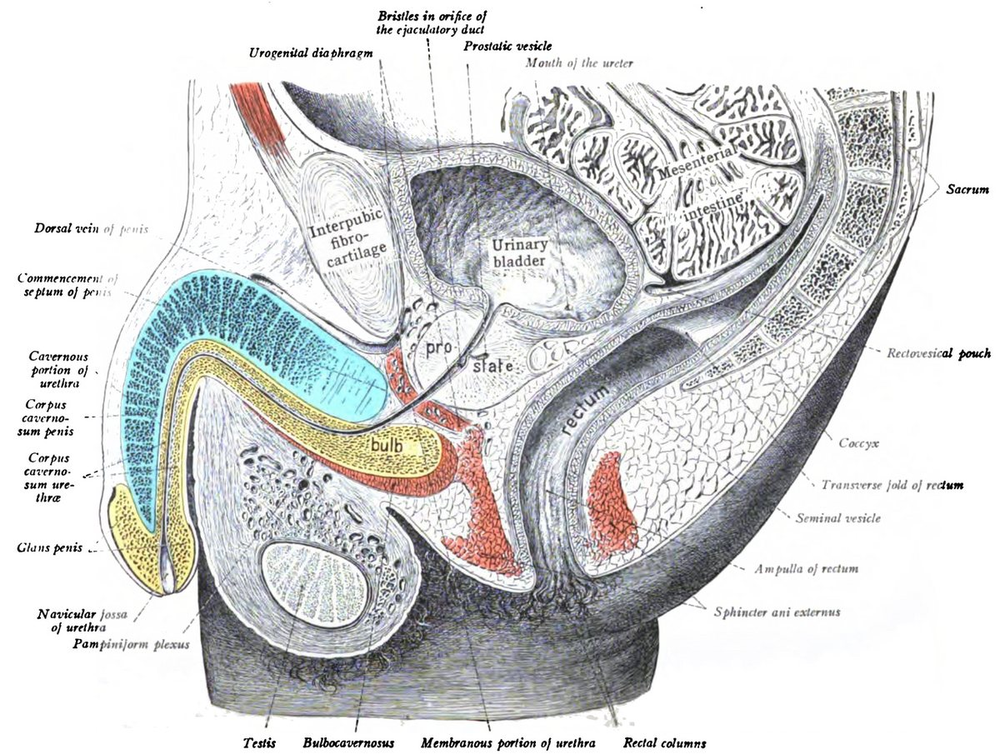
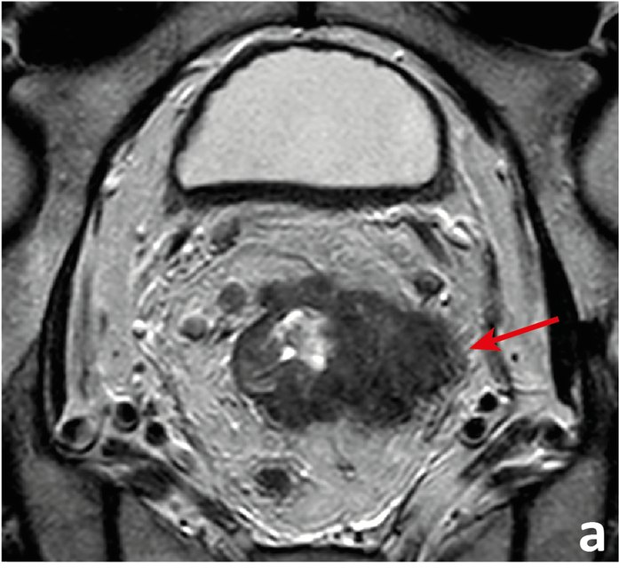
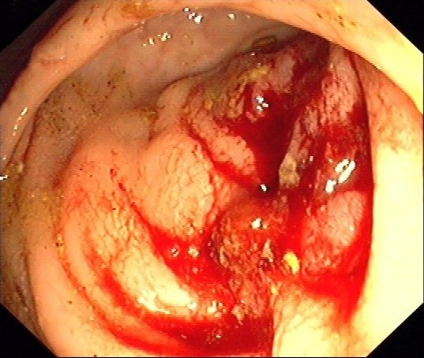
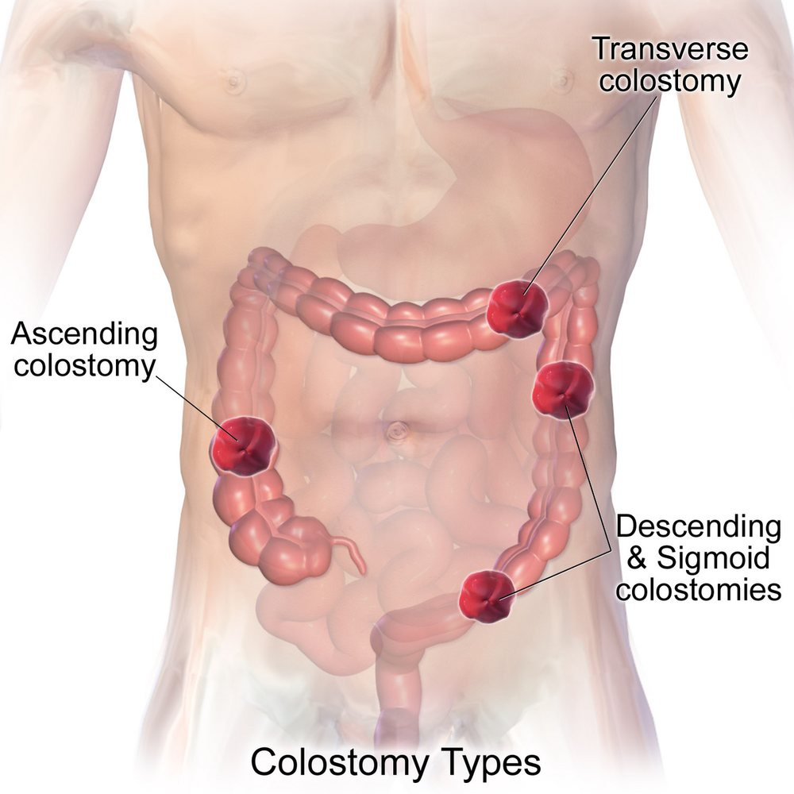

קרצינומה של ה-rectum
בדיקה רקטלית ו-MRI של האגן, טיפול לפני ניתוח, כריתה מלאה של ה-mesorectum, שימור sphincters וגישת "המתנה ומעקב"
בסוף המפגש תדעו
- לבצע ולתעד בדיקה רקטלית: מרחק מהשוליים ומה-dentate line, ניידות וקשר ל-sphincter ולאיברים השכנים
- להסביר מה MRI של האגן נותן: שלב T ו-N, השוליים ההיקפיים וה-anterior peritoneal reflection
- להכיר את הטיפול לפני הניתוח (קרינה-כימותרפיה, TNT) ולדעת למי הוא מיועד
- לתאר את המישור של כריתת ה-mesorectum (TME) ואת העצבים שבסכנה
- להחליט בין כריתה קדמית נמוכה, כריתה בטנית-פרינאלית, כריתה מקומית ו"המתנה ומעקב"
סרטן ה-rectum במספרים
- בחילות, נפיחות, עצירות: חסימה מתקרבת. אולי צריך להתערב מהר
- כאב נוירופתי: גידול שחודר ל-sacral nerve roots
- טנזמוס וכאב רקטלי: לרוב גידול נמוך שחודר ל-sphincter
- תפקוד בסיסי: שתן, מין ויציאות. שליטה לא מושלמת לפני הניתוח מנבאת תפקוד גרוע אחרי כריתה קדמית נמוכה
- כושר ושבריריות: קובעים אם יעמוד בטיפול מקדים ובניתוח
- סיפור משפחתי: תסמונת תורשתית משנה טיפול ומעקב
הבדיקה הרקטלית של הכירורג
- בדיקה רקטלית ופרוקטוסקופיה (גמישה או קשיחה) בידי הכירורג המטפל: היא קובעת את המשך הבירור והטיפול
- מתעדים: המרחק של הגידול מה-anal verge ומה-dentate line
- גידול ב-surgical anal canal: בודקים ניידות מול ה-prostate או ה-vagina ומול ה-sphincters
- נגע מוקדם או פוליפ ממאיר: צורה ודגם הבלוטות באנדוסקופיה עוזרים להחליט על כריתה מקומית
- אם עוד אין אבחנה: ביופסיה, כולל צביעה לחלבוני MMR

ה-rectum והשכנים שלו

👆 לחצו על אזור בחתך כדי לקרוא עליו
ה-mesorectum עטוף בפציה דקה (fascia propria) ומכיל את ענפי ה-IMA ואת הלימפה. כריתת ה-mesorectum (TME) נעשית מחוץ לפציה הזו ומוציאה הכול כגוש אחד. לימפה משני השלישים העליונים עולה לבלוטות של ה-IMA. מהשליש התחתון גם לצדדים, לבלוטות ה-internal iliac
הדיסקציה האחורית עוברת לפני ה-presacral fascia. מתחת לה יש presacral venous plexus: קרע שם מדמם קשות: הכלים נסוגים לתוך ה-sacral foramina. מעל ה-sacral promontory עובר ה-superior hypogastric plexus: פגיעה בו גורמת לשפיכה לאחור
בקיר הקדמי השוליים ההיקפיים (CRM) צרים. כשהשוליים מאוימים גם אחרי טיפול מקדים, יוצאים מחוץ למישור ה-TME וכורתים יחד את האיבר המעורב (prostate, vagina). פגיעה ב-neurovascular bundles שליד ה-prostate: הפרעה בתפקוד המיני ובתפקוד ה-bladder
ה-peritoneum יורד מעל ה-bladder ויוצר את ה-rectovesical pouch בינו לבין ה-rectum. ה-anterior peritoneal reflection נראה ב-MRI ומשמש גבול: גידול מתחתיו (rectum חוץ-צפקי) בשלב מתקדם הוא המועמד לטיפול לפני ניתוח. ה-rectum שמעליו נחשב תוך-צפקי
הגבול התחתון של ה-rectum הוא ה-anorectal ring: הגבול העליון של ה-sphincters ושל ה-puborectalis, מורגש בבדיקה. מעורבות של ה-levator ani או של ה-external sphincter: אין שימור sphincters. רק ה-internal sphincter: אפשר intersphincteric resection בחולים נבחרים
הבירור לפני שמחליטים


קרינה-כימותרפיה ו-TNT
823 חולים. חזרה מקומית ב-5 שנים 6% לעומת 13%. בלי הבדל בהישרדות ובגרורות. רעילות קשה 27% לעומת 40%
כפי שמסוכם ב-Sabiston 22, עמ׳ 1504הישרדות בלי מחלה ב-3 שנים טובה יותר (HR 0.69). תגובה פתולוגית מלאה 27.8% לעומת 12.1%. 81% השלימו את הכימותרפיה לעומת 75%
כפי שמסוכם ב-Sabiston 22, עמ׳ 1504קרינה 5×5 Gy, אחריה CAPEOX או FOLFOX4 ורק אז TME. כישלון טיפול ב-3 שנים 23.7% לעומת 30.4%, בעיקר פחות גרורות. תגובה מלאה 28% לעומת 14%
כפי שמסוכם ב-Sabiston 22, עמ׳ 1504"המתנה ומעקב"
- אחרי קרינה-כימותרפיה, ב-20–25% מהמנותחים לא נמצא גידול בנתיח. מכאן הרעיון לא לנתח מי שהגיב באופן מלא
- Habr-Gama 2004: 71 חולים עם תגובה קלינית מלאה במעקב צמוד. הישרדות ל-5 שנים 100%, בלי מחלה 92%
- היום: גישה סלקטיבית, רק בצוות מנוסה ולפי פרוטוקול מוגדר
- OPRA: הישרדות בלי מחלה ב-3 שנים 76% בשתי הזרועות. כשהכימותרפיה ניתנת אחרי הקרינה, יותר שימור rectum ב-3 שנים: 53% לעומת 41%. מי שהגידול חזר נותח, בלי פגיעה בהישרדות
כריתת ה-mesorectum · "המישור הקדוש"
- Heald: דיסקציה חדה מחוץ ל-fascia propria ולפני ה-presacral fascia. ה-rectum יוצא יחד עם ה-mesorectum, הכלים והבלוטות
- גידול ב-rectum העליון: אין צורך לרדת עד ה-sphincters. כריתה חלקית של ה-mesorectum, לפחות 5 ס״מ מתחת לגידול, בלי לפגוע בפציה ליד הגידול
- קשירה גבוהה של ה-IMA מקובלת, אבל לא הוכחה עדיפה על קשירה מתחת ל-left colic, שחוסכת עצבים
- בלוטות לטרליות חשודות ב-MRI בגידול נמוך: שוקלים דיסקציה של ה-pelvic sidewall
איפה העצבים בסכנה
לשמר את ה-sphincter או סטומה קבועה?

חיבור, סטומה מגינה ותפקוד
כריתה מקומית, APR וגישה זעיר-פולשנית
- לא מוציאה בלוטות ולא נותנת להן שלב
- רק cT1 בלי סימני סיכון: חדירה עמוקה לתת-רירית (יותר מ-1 מ״מ, SM3), התמיינות ירודה, חדירה ללימפה, לכלי דם ולעצבים, ניצנוץ, שוליים חיוביים
- נמצאו סימני סיכון בנתיח: TME פורמלי בחולה כשיר
- ה-rectum, ה-anus וה-sphincters יוצאים כגוש אחד. קולוסטומיה קבועה
- להימנע מ"חרוט" בנתיח ליד ה-levators: יותר שוליים חיוביים וחזרות. עדיף נתיח גלילי
- omentum למילוי האגן. מתלה שריר מקטין סיבוכי פצע ב-perineum, בעיקר אחרי קרינה
- מקצרים התאוששות ומשפרים תוצאות קצרות טווח
- מחקרים אקראיים לא הוכיחו שלפרוסקופיה לא נופלת מניתוח פתוח מבחינה אונקולוגית
- לכן: רק בידי מנתחים מנוסים
פתולוגיה, טיפול משלים, dMMR וגרורות
- דו״ח פתולוגיה סינופטי: שלמות ה-mesorectum, הקשר ל-peritoneal reflection ודרגת התגובה לטיפול (TRG מ-0, תגובה מלאה, עד 3, בלי תגובה). תגובה מלאה: הישרדות ל-5 שנים כ-90%
- קיבל TNT: לא נותנים כימותרפיה משלימה. לא קיבל כימותרפיה מלאה לפני: בדרך כלל כן, FOLFOX ב-8 מחזורים
- מעקב: כמו ב-colon. בסיכון גבוה לחזרה מקומית מוסיפים רקטוסיגמואידוסקופיה כל חצי שנה לפחות שנתיים
מחקרים שכדאי להכיר
1,194 חולים (T2N+, T3) שמתאימים לשימור sphincter. FOLFOX לפני הניתוח (קרינה רק אם הגידול לא הצטמק) לא היה נחות. הישרדות בלי מחלה ל-5 שנים 80.8% לעומת 78.6%. רק 9% בזרוע הכימותרפיה קיבלו קרינה לפני הניתוח
Schrag D et al. N Engl J Med 2023;389:322-342022: כל 12 החולים הראשונים הגיעו לתגובה קלינית מלאה. 2025: כל 49 חולי ה-rectum שהשלימו טיפול הגיעו לתגובה מלאה ובחרו מעקב בלי ניתוח. הישרדות בלי חזרה ב-2 שנים 92% בכל הקבוצה
Cercek A et al. N Engl J Med 2022;386:2363-76 · N Engl J Med 2025;392:2297-308920 חולים. בזרוע הקרינה הקצרה עם כימותרפיה הייתה יותר חזרה מקומית אחרי כריתה: 10% לעומת 6%. בחזרות האלה ה-mesorectum נפגע בניתוח לעיתים קרובות יותר. הירידה בגרורות נשמרה
Dijkstra EA et al. Ann Surg 2023;278:e766-72324 חולים, מעקב חציוני 5.1 שנים. הישרדות בלי TME: 54% כשהכימותרפיה אחרי הקרינה לעומת 39%. 94% מהחזרות בשנתיים הראשונות. הישרדות בלי מחלה דומה בשתי הזרועות
Verheij FS et al. J Clin Oncol 2024;42:500-6 (מצוטט ב-Sabiston 22)חמישה דברים לקחת למחלקה
- הבדיקה הרקטלית של הכירורג היא הבסיס: מרחק, ניידות וקשר ל-sphincter. תמיד מתעדים
- MRI של האגן קובע T, N, שוליים היקפיים ומיקום ביחס ל-peritoneal reflection. כל חולה עובר ועדה רב-תחומית
- גידול מתקדם ב-rectum החוץ-צפקי מקבל טיפול לפני הניתוח. היום לרוב TNT
- TME במישור הנכון מוריד חזרה מקומית ושומר על העצבים
- תגובה קלינית מלאה: אפשר "המתנה ומעקב" בצוות מנוסה. גידול dMMR: לחשוב על אימונותרפיה